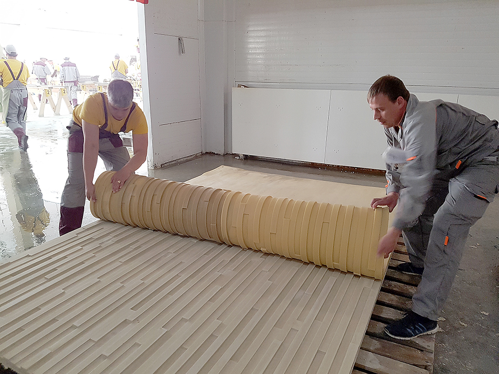

Архитектура развивается в борьбе эстетических воззрений и технологических возможностей. Так и технология вентилируемого фасада несколько десятков лет назад выделилась в ёмкое направление современной архитектуры с разнообразием облицовочных материалов. "Пирог" таких фасадов хорошо сочетает две важные функции: утепление и защиту здания от внешнего атмосферного воздействия (осадки, солнечное излучение, ветер). Если выбор по настоящему качественных утеплителей не так велик, то в качестве "одежды" могут быть использованы как премиальные материалы, такие как, натуральный камень, клинкер, керамика, так и ассортимент более доступных, но не менее стойких материалов.
strona.mail@gmail.com
+7 905 748 59 55
Очевидно, что эстетика фасада перестала быть самостоятельной категорией и, как никогда прежде, подвластна экономической выгоде. Но, естественная задача архитектуры - сочетать такие элементы, как экология, экономический аспект, адекватное пространство жизнедеятельности, свет, форму и эмоции. Для гармонизации форм фасадов и объемов здания архитектор применяет средства архитектурной композиции — соразмерность, масштаб, ритм, пропорции, тектонику, цвет, свет, фактуру материала.
Совремеменные решения для конструирования фасадов предоставляют широкую гамму фасадной "одежды", и, тем не менее, запрос на эстетичность материала еще далек от полного удовлетворения. Оно и не удивительно, при всех достоинствах отделки металлокассетами, керамогранитом, фиброцементной или hpl-плитой, плоский, "мелкоквадратный" рисунок фасада со временем приедается и требует разнообразия в пейзаже застройки. Очевидный запрос архитекторов на крупноформатные или неплоские модули не находит удовлетворения.
В поиске решения, сочетающего преимущества вентилируемого фасада и современную эстетику, мы обобщили знания и наработки компаний, преуспевающих в области архитектурных фасадов. На производственной базе ГК "Архикамень" были осуществлены эксперименты с наиболее перспективными материалами - ультрасверхпрочными бетонами (UHPC), дисперсноармированными и пространственноармированными бетонами, полимерными композиционными материалами.
Получив положительный результат, мы приняли решение начать серийный выпуск крупноформатных фасадных элементов под брендом STRONA™.